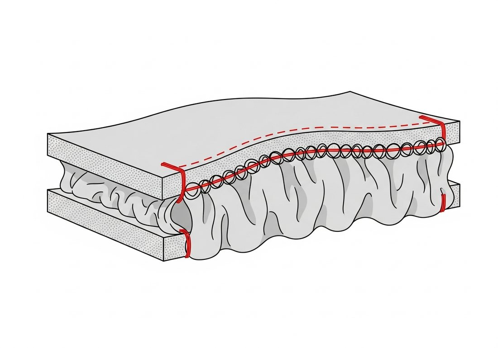
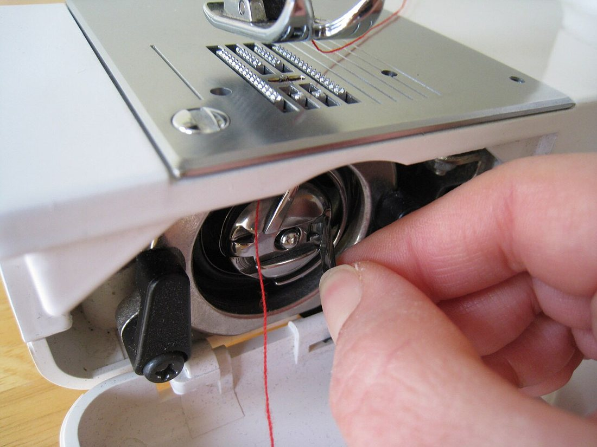
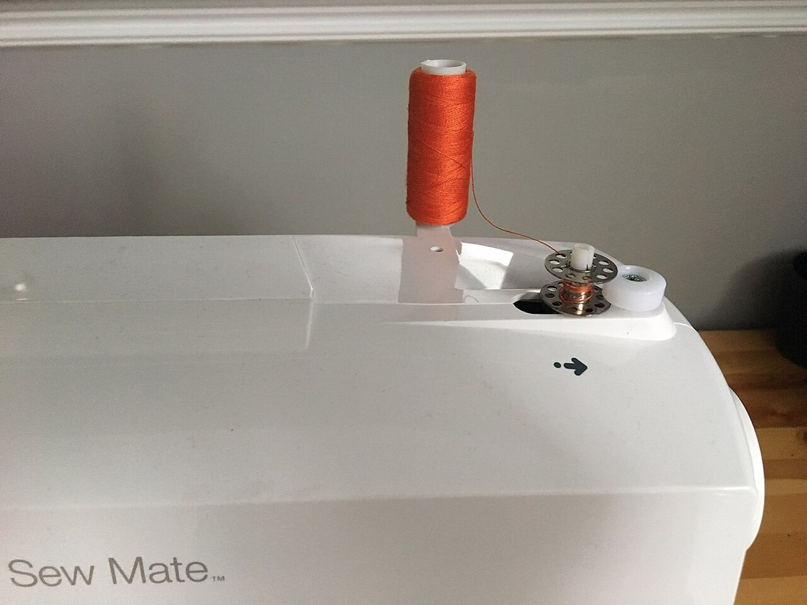
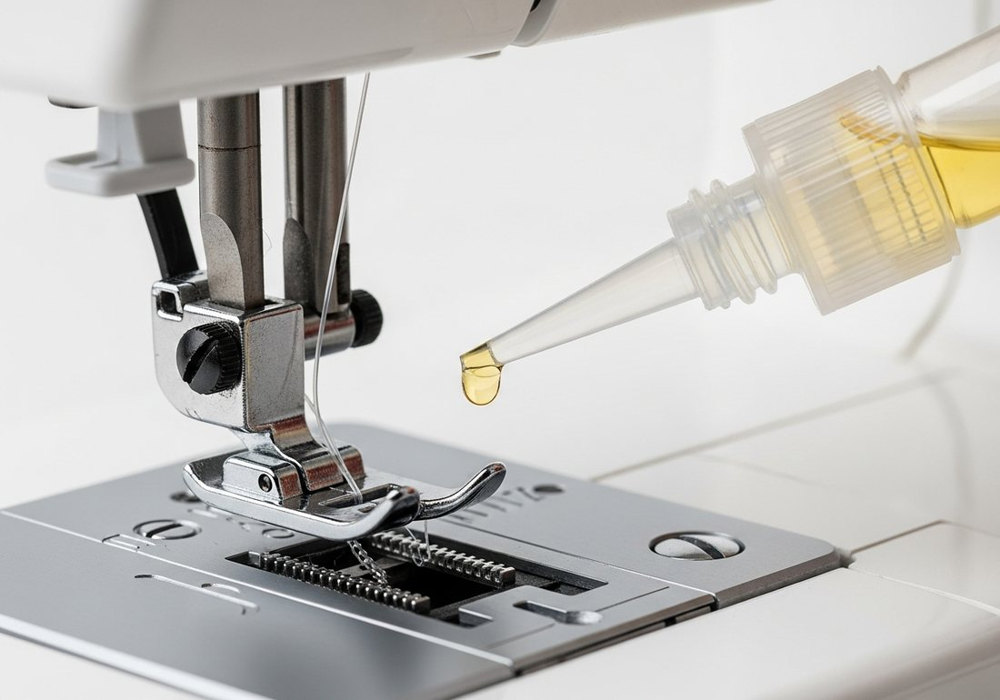
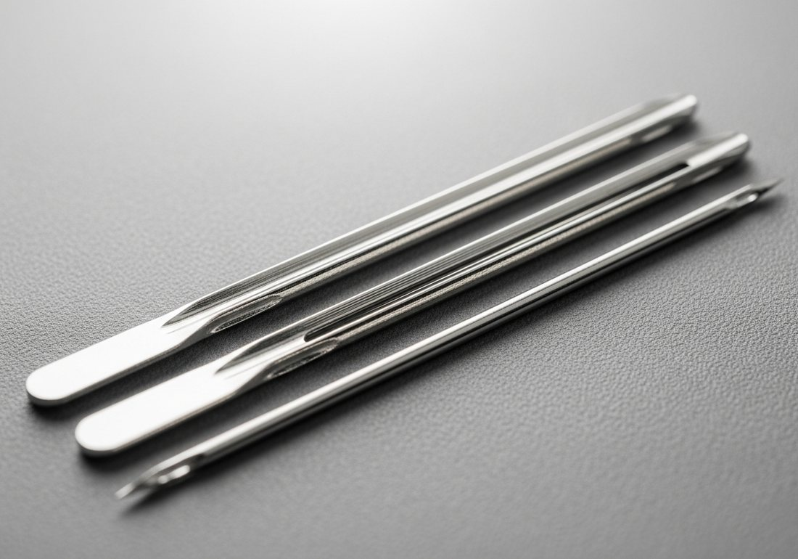

Көркем еңбек · 3-бөлім · Тігін ісі Art & Craft · Section 3 · Sewing Художественный труд · Раздел 3 · Швейное дело
🪡 Машина жігінің ақаулары және машинаға күтім
🪡 Machine Stitch Defects & Machine Care
🪡 Дефекты машинной строчки и уход за машиной
Жіптің керілуін қалай теңгереміз, ақауларды қалай тауып түзетеміз және машинаны қалай ұзақ сақтаймыз. How to balance thread tension, find and fix faults, and keep your machine working for years. Как уравновесить натяжение нитей, найти и устранить дефекты и сохранить машину надолго.
Машина жігі — екі жіптің ісі: жоғарғы (инедегі) жіп пен төменгі (шүмектегі) жіп. Дұрыс жікте олар дәл матаның ортасында түйіседі, сондықтан жіктің беті де, асты да бірдей әдемі. Егер жоғарғы немесе төменгі жіптің керілуі бұзылса, не ине, не жіп дұрыс таңдалмаса — жікте ақау пайда болады: ілмектер, тіс түсу, мата бүрісу, жіптің не иненің сынуы. Көп ақаудың себебі қарапайым: дұрыс емес тарту, доғал не қисық ине, шаң-түкпен ластанған механизм. Сондықтан ақауды тану мен машинаға күтім — бір тақырыптың екі жағы. A machine stitch is the work of two threads: the upper (needle) thread and the lower (bobbin) thread. In a correct stitch they interlock exactly in the middle of the fabric, so the top and the underside look equally neat. If the tension of the upper or lower thread is wrong, or the needle or thread is poorly chosen, a defect appears: loops, skipped stitches, puckering, broken thread or a broken needle. Most faults have simple causes — wrong tension, a blunt or bent needle, a mechanism clogged with lint. That is why recognising defects and caring for the machine are two sides of one topic. Машинная строчка — это работа двух нитей: верхней (игольной) и нижней (челночной). В правильной строчке они переплетаются точно в середине ткани, поэтому и лицо, и изнанка выглядят одинаково аккуратно. Если нарушено натяжение верхней или нижней нити либо неверно подобраны игла и нитки, появляется дефект: петли, пропуски, стягивание ткани, обрыв нити или поломка иглы. У большинства дефектов причины простые — неправильное натяжение, тупая или погнутая игла, забитый пухом механизм. Поэтому распознавание дефектов и уход за машиной — две стороны одной темы.
Жіптің керілуі: жік сапасы Thread Tension: Stitch Quality Натяжение нитей: качество строчки
Қиманы қараңыз: қызыл — жоғарғы жіп, көк — шүмек жібі. Түйіндескен жер қайда екеніне қараңыз. Look at the cross-section: red = upper thread, blue = bobbin thread. Watch where they interlock. Смотрите на разрез: красная — верхняя нить, синяя — челночная. Следите, где они переплетаются.
Жиі кездесетін ақаулар: себебі мен шешімі Common Defects: Cause & Fix Частые дефекты: причина и решение
| Дефект | Причина | Как устранить |
|---|---|---|
| Петли снизу (на изнанке) | Слабое натяжение верхней нити; неправильная заправка верхней нити. | Усилить верхнее натяжение; перезаправить верхнюю нить при поднятой лапке. |
| Петли сверху (с лица) | Слабое натяжение нижней (челночной) нити; неверно вставлена шпулька. | Подтянуть винт шпульного колпачка; правильно вставить шпульку. |
| Стягивание ткани (сборки) | Слишком сильное натяжение обеих нитей; слишком толстая игла/нитки для тонкой ткани. | Ослабить натяжение; взять иглу и нитки тоньше; уменьшить длину стежка. |
| Пропуски стежков | Тупая, погнутая или не та игла; игла вставлена не до упора. | Заменить иглу на новую нужного типа; вставить иглу до упора плоской стороной к себе/назад. |
| Обрыв верхней нити | Сильное натяжение; узлы на нитке; острые заусенцы; неверная заправка. | Ослабить натяжение; взять ровную нить; перезаправить; проверить игольную пластину. |
| Поломка иглы | Тянут ткань руками; толстая ткань тонкой иглой; ослаб винт иглы. | Не тянуть ткань — её ведут зубцы; подобрать иглу по ткани; затянуть винт иглы. |
| Ақау | Себебі | Жою жолы |
|---|---|---|
| Астында ілмек (теріс жағы) | Жоғарғы жіптің керілуі әлсіз; жоғарғы жіп қате тартылған. | Жоғарғы керуді күшейту; табанды көтеріп, жоғарғы жіпті қайта тарту. |
| Үстінде ілмек (беткі жағы) | Төменгі (шүмек) жіптің керілуі әлсіз; шүмек қате салынған. | Шүмек қалпақшасының бұрандасын қатайту; шүмекті дұрыс салу. |
| Мата бүрісуі (жиырылу) | Екі жіптің керілуі тым күшті; жұқа матаға жуан ине/жіп. | Керуді азайту; жіңішке ине мен жіп алу; тігіс ұзындығын кішірейту. |
| Тіс түсу (өткізіп кету) | Доғал, қисық немесе сай келмейтін ине; ине толық кірмеген. | Жаңа, дұрыс типті инеге ауыстыру; инені тірелгенше кіргізу. |
| Жоғарғы жіптің үзілуі | Күшті керу; жіптегі түйіндер; өткір қылтанақтар; қате тарту. | Керуді азайту; тегіс жіп алу; қайта тарту; ине тақтасын тексеру. |
| Иненің сынуы | Матаны қолмен тарту; жұқа инемен жуан мата; ине бұрандасы босаған. | Матаны тартпау — оны тісшелер жүргізеді; инені матаға сай таңдау; бұранданы қатайту. |
| Defect | Cause | How to fix |
|---|---|---|
| Loops underneath (on the back) | Weak tension of the upper thread; upper thread badly threaded. | Tighten upper tension; re-thread the top with the presser foot raised. |
| Loops on top (on the face) | Weak tension of the lower (bobbin) thread; bobbin inserted wrongly. | Tighten the bobbin-case screw; insert the bobbin correctly. |
| Puckered fabric (gathers) | Both threads too tight; needle/thread too thick for thin fabric. | Loosen tension; use a finer needle and thread; shorten the stitch. |
| Skipped stitches | Blunt, bent or wrong needle; needle not pushed up fully. | Fit a new needle of the right type; insert it all the way up. |
| Upper thread breaks | Tension too tight; knots in the thread; sharp burrs; bad threading. | Loosen tension; use smooth thread; re-thread; check the needle plate. |
| Needle breaks | Pulling fabric by hand; thick fabric with a thin needle; loose needle screw. | Don't pull the fabric — the feed dogs move it; match needle to fabric; tighten the screw. |

Қалай тексеру керек? Әрқашан жұмыс матасының қиығында сынама жік салыңыз. Жікті екі жағынан да қараңыз: егер бір жіп екінші жақтан көрініп тұрса — сол жақтың керілуі әлсіз. Алдымен жоғарғы керуді реттеңіз (ол реттегіш оңай қол жетеді), шүмек бұрандасына сирек тиісіңіз. Кез келген ақауда ең бірінші инені және жіптің дұрыс тартылғанын тексеріңіз — көп жағдайда себеп нақ сонда. How to check. Always sew a test seam on a scrap of your fabric. Look at both sides of the stitch: if one thread shows through on the other side, that side's tension is weak. Adjust the upper tension first (its dial is easy to reach) and touch the bobbin screw only rarely. With any fault, first check the needle and that the thread is correctly threaded — that is the cause most of the time. Как проверить. Всегда делайте пробную строчку на лоскуте своей ткани. Смотрите строчку с двух сторон: если одна нить видна с другой стороны — у той стороны слабое натяжение. Сначала регулируйте верхнее натяжение (его регулятор легко доступен), винт шпульки трогайте редко. При любом дефекте первым делом проверьте иглу и правильность заправки нити — чаще всего причина именно в этом.
Машинаға күтім: 4 қадам Caring for the Machine: 4 Steps Уход за машиной: 4 шага
🔍 Үлкейту үшін суретті басыңыз. Кез келген күтім алдында машинаны тоқтан ажыратыңыз. 🔍 Tap a photo to enlarge. Before any care, unplug the machine. 🔍 Нажмите на фото, чтобы увеличить. Перед любым уходом отключите машину от сети.

1. Шүмекті тазалау1. Clean the shuttle1. Чистка челнока
Шаң-түкті щёткамен алып тастаңыз — ілмек пен үзілудің басты себебі.Brush out the lint — the main cause of loops and breakage.Уберите пух кисточкой — главная причина петель и обрывов.

2. Шүмекті орау2. Wind the bobbin2. Намотка шпульки
Жіпті біркелкі ораңыз; артық толтырмаңыз.Wind evenly; do not overfill the bobbin.Наматывайте ровно; не переполняйте шпульку.

3. Майлау3. Oiling3. Смазка
Арнайы маймен, нұсқаулық бойынша — артық майламаңыз.Special oil, as the manual says — never over-oil.Специальным маслом по инструкции — без избытка.

4. Ине4. The needle4. Игла
Матаға сай таңдаңыз; доғал инені ауыстырыңыз.Match it to the fabric; replace it when blunt.Подбирайте под ткань; тупую — заменяйте.
Күтім кестесі Care Schedule График ухода
Шаң-түкті щёткамен тазалап, машинаны қаптамамен жабыңыз.Brush out the lint and cover the machine with its case.Очистите от пуха щёточкой и накройте машину чехлом.
Шүмек ұясын тереңірек тазалаңыз, инені мезгілінде жаңартыңыз.Deep-clean the shuttle area and renew the needle regularly.Глубже чистите челночный отсек и вовремя меняйте иглу.
Нұсқаулықтағы нүктелерге арнайы май (заманауи көп машина майлауды қажет етпейді).Special oil at the points in the manual (many modern machines need none).Специальное масло в точки из инструкции (многим современным машинам смазка не нужна).
Қауіпсіздік пен сақтау ережелері Safety & Storage Rules Правила безопасности и хранения
🔌 Тоқтан ажыратыңызUnplug itОтключайте от сети
Тазалау, майлау, ине ауыстыру алдында желіден ажыратыңыз.Disconnect before cleaning, oiling or changing the needle.Перед чисткой, смазкой и заменой иглы выньте вилку.
👀 Саусақты сақтаңызMind your fingersБерегите пальцы
Саусақты инеден аулақ ұстаңыз; шашты жинаңыз.Keep fingers away from the needle; tie back hair.Держите пальцы вдали от иглы; уберите волосы.
🧹 Таза ұстаңызKeep it cleanДержите в чистоте
Шаңнан қаптамамен қорғаңыз; құрғақ жерде сақтаңыз.Protect from dust with a cover; store in a dry place.Защищайте чехлом от пыли; храните в сухом месте.
🪡 Бос жүргізбеңізDon't run emptyНе шейте «вхолостую»
Матасыз және жіпсіз тіге бермеңіз — ине мен шүмекке зиян.Avoid sewing without fabric and thread — it harms needle and shuttle.Не строчите без ткани и ниток — вредно для иглы и челнока.
💬 Есте сақтаңыз 💬 Remember 💬 Запомните
Әдемі жік — теңгерілген керу мен таза, дұрыс инеден туады. Ақаудың 90%-ы үш себептен: қате керу, доғал ине, ластанған механизм. Әр жұмыстан кейін шаң-түкті тазалаңыз, инені дер кезінде жаңартыңыз, машинаны желіден ажыратып, қаптамамен жабыңыз — сонда машина көп жыл адал қызмет етеді. A neat stitch comes from balanced tension and a clean, correct needle. About 90% of faults have three causes: wrong tension, a blunt needle, a clogged mechanism. Brush out the lint after every session, renew the needle in time, unplug the machine and cover it — and it will serve you faithfully for many years. Аккуратная строчка рождается из уравновешенного натяжения и чистой, правильной иглы. Около 90% дефектов имеют три причины: неверное натяжение, тупая игла, забитый механизм. Очищайте пух после каждой работы, вовремя меняйте иглу, отключайте машину от сети и накрывайте чехлом — и она прослужит вам верой и правдой долгие годы.